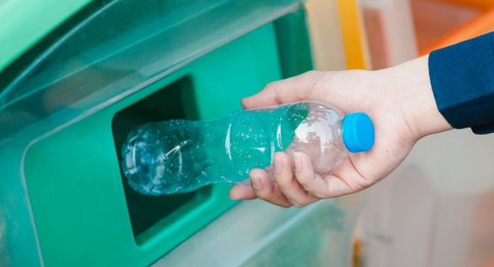

Elk gerecycled materiaal dat Millieubels omarmt, vertelt een verhaal van vernieuwing en verantwoordelijkheid. De visie om afval een nieuw leven te geven en de grenzen van gerecyclede ontwerp te verleggen is bij hun het grootste doel.
Creativiteit met recycelen
Door materialen te hergebruiken, ontstaat een eindeloze bron van duurzame inspiratie. Oude items krijgen een nieuw leven en biedt Millieubels de mogelijkheid om unieke en milieuvriendelijke projecten te ontwikkelen. In samenwerking met The Upcycle in Amsterdam hebben ze een nieuwe manier gevonden om mensen enthousiast te maken over recycelen.
Werk samen met millieubels!
Met dit nieuwe initiatief wordt jouw plastic afval terug op de straat gezet, maar dan in de vorm van innovatieve en kunstzinnige banken. Werk samen met millieubels en laat de wereld zien wat de mogelijkheden zijn van recycelen.
Hoe doe jij mee?
-
Verzamel je plastic afval
-
Breng het naar een van de vele verzamelpunten
-
Volg je gerecyclede afval via de informatie op je afleverbon
-
Wacht op het resultaat
-
Bekijk de verschillende creaties waar jouw afval in zit!